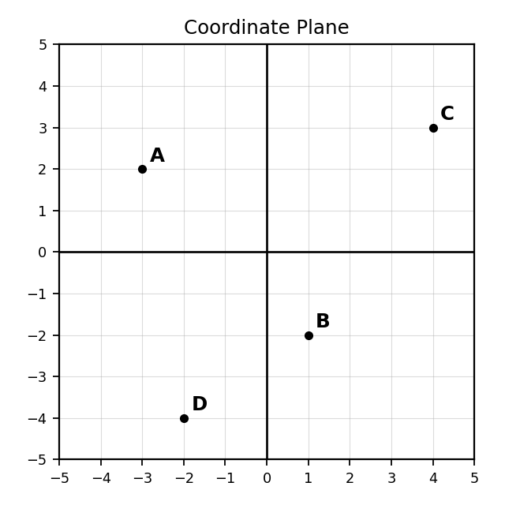
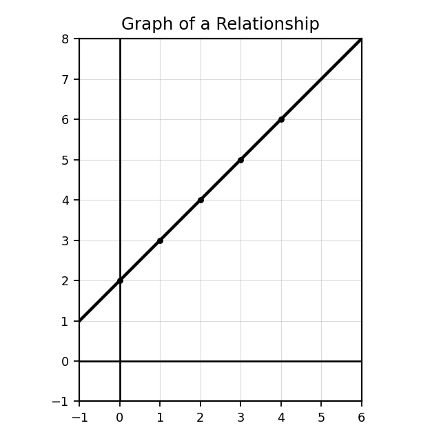
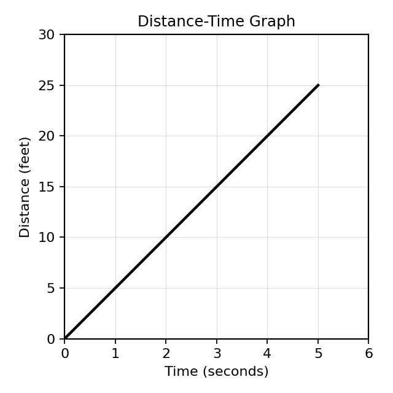
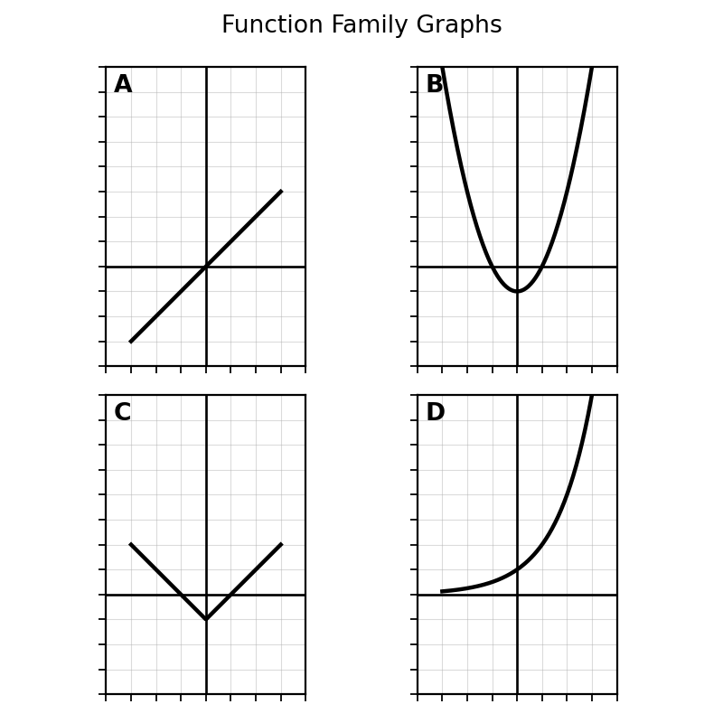
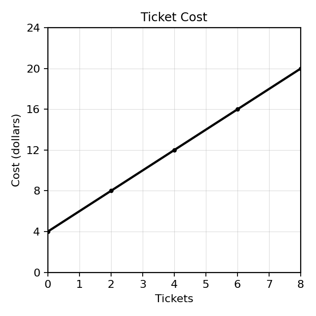
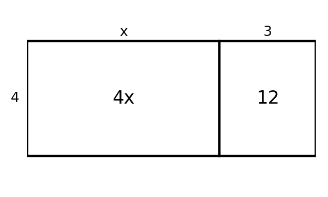
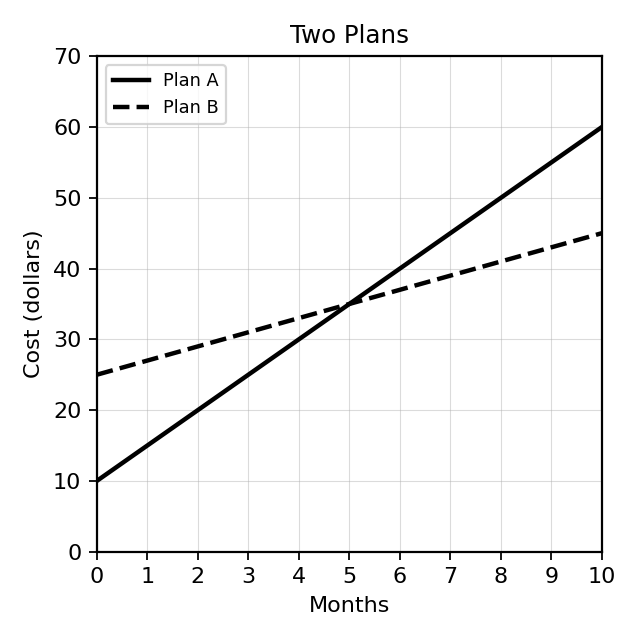

Students will analyze relationships using functions and multiple representations in order to interpret patterns, communicate mathematical structure, and connect equations, tables, graphs, and contexts.
| Rung | I Can Statement | DOK | Level |
|---|---|---|---|
| 8 | I can analyze and model relationships using functions, expressions, equations, graphs, tables, and contexts, then justify conclusions and evaluate whether solutions are reasonable. | DOK 4 | Above |
| 7 | I can create, compare, and revise mathematical models across multiple representations and critique whether the representations accurately describe the same relationship. | DOK 4 | Above |
| 6 | I can analyze functions, expressions, and equations to explain structure, identify function-family behavior, and connect features across representations. | DOK 3 | Essential |
| 5 | I can justify whether representations match, explain input-output relationships, and defend conclusions using evidence from tables, graphs, equations, and contexts. | DOK 3 | Essential |
| 4 | I can write and rewrite expressions and equations to represent relationships, functions, and situations. | DOK 2 | Essential |
| 3 | I can evaluate function rules, use inputs and outputs, classify common function families, and connect basic representations. | DOK 2 | Essential |
| 2 | I can identify and use vocabulary, notation, and features for functions, inputs, outputs, expressions, equations, tables, graphs, and contexts. | DOK 1 | Essential |
| 1 | I can recognize tables, graphs, equations, expressions, contexts, and basic function-family shapes as different ways to represent mathematical relationships. | DOK 1 | Essential |
Format: 3–5 minute warm-up, vocabulary check, representation match, graph/equation identification, or exit ticket
Purpose: Check whether students can recall vocabulary, recognize representations, identify inputs and outputs, classify basic function-family shapes, and use notation correctly.
Use the coordinate plane below. State the coordinates of points A and C.

Complete the table for the relationship $y=x+2$.
| $x$ | 0 | 1 | 2 | 3 |
|---|---|---|---|---|
| $y$ |
Use the graph below. What is the value of $y$ when $x=3$?

Use the graph below. What quantity is shown on the horizontal axis? What quantity is shown on the vertical axis?

Identify the representation type: table, graph, equation, or context.
$$y=4x+1$$
For the rule $f(x)=3x-2$, find $f(5)$.
Use the graph set below. Identify the family shown in Graph B: linear, quadratic, absolute value, or exponential.

Identify the coefficient and constant term in the expression $7x+4$.
Format: Exit ticket, partner check, whiteboard response, mini-quiz, matching task, or short written task
Purpose: Check whether students can evaluate function rules, match representations, rewrite expressions, classify function families, and write equations from situations.
Plot the points $(0,2)$, $(1,4)$, $(2,6)$, and $(3,8)$ on the coordinate plane. Describe the pattern you see.
Complete the table for $y=3x+2$ and explain how each output is found.
| $x$ | 0 | 1 | 2 | 3 |
|---|---|---|---|---|
| $y$ |
Determine whether the relation shown in the table is a function. Explain your reasoning.
| Input | 1 | 2 | 2 | 4 |
|---|---|---|---|---|
| Output | 5 | 7 | 9 | 11 |
Classify each equation as linear, quadratic, absolute value, or exponential.
Find the constant rate of change from the table.
| $x$ | 0 | 1 | 2 | 3 |
|---|---|---|---|---|
| $y$ | 7 | 10 | 13 | 16 |
Write a rule for the table.
| $x$ | 0 | 1 | 2 | 3 |
|---|---|---|---|---|
| $y$ | 5 | 9 | 13 | 17 |
A phone company charges a $20 start fee and $15 per month.
Write an equation for total cost $C$ after $m$ months.
Use the ticket-cost graph below.

Format: Constructed response, representation analysis, strategy comparison, error analysis, or discourse prompt
Purpose: Check whether students can justify representation matches, analyze function behavior, explain expression structure, and defend the reasonableness of equations as models.
A student says:
The point $(3,8)$ means the graph goes right 8 and up 3.
Critique the statement and explain the correct interpretation.
Determine whether the equation $y=x+2$ matches the graph below. Use at least two pieces of evidence.
Compare the rules $y=2x+3$ and $y=x^2+3$. Explain how their tables would grow differently.
A student uses the rule $y=x+5$ for a pattern that starts at 5 and adds 5 each time.
Explain the misconception and correct the rule.
Determine whether the relationship is linear and justify your answer using differences.
| $x$ | 0 | 1 | 2 | 3 |
|---|---|---|---|---|
| $y$ | 2 | 6 | 12 | 20 |
Use the area model below to explain why $4(x+3)$ and $4x+12$ are equivalent.

A student solves $4x+12=40$ and says the answer means “7 dollars.” Critique the interpretation and explain what information is needed to interpret correctly.
Compare two methods for solving $3x+9=30$: using inverse operations and using a table. Explain strengths of each method.
Format: Brief performance task, modeling task, critique-and-revise task, design task, or extended application
Purpose: Check whether students can transfer function and algebra foundations to unfamiliar situations, create coherent models, and justify conclusions across multiple representations.
Create a relationship that can be represented with a table, graph, equation, and context. Include all four representations and explain how each one shows the same relationship.
Create two relations: one that is a function and one that is not a function. Represent each with either a table or graph, and explain the difference using inputs and outputs.
Design a function-machine puzzle where the rule is hidden. Include at least four input-output pairs and explain how the rule can be discovered.
Create a classification challenge using the four graph families below. Write one clue for each graph that does not directly name the family.
Create a real-world scenario that could be represented by both $4x+12$ and $4(x+3)$. Explain why both forms are useful.
Create a break-even situation represented by an equation. Solve it and explain what the break-even point means.
Use the two-plan graph below to write a recommendation for a customer. Your recommendation must depend on the number of months and cite evidence from the graph.

Design a multi-representation modeling task involving an equation, graph, table, and context. Include the expected student reasoning.